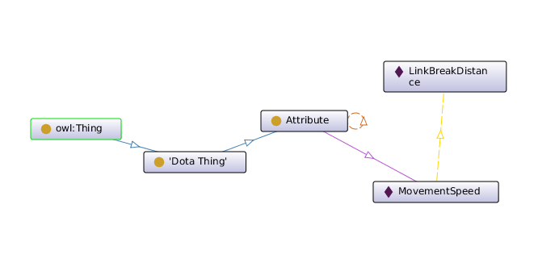
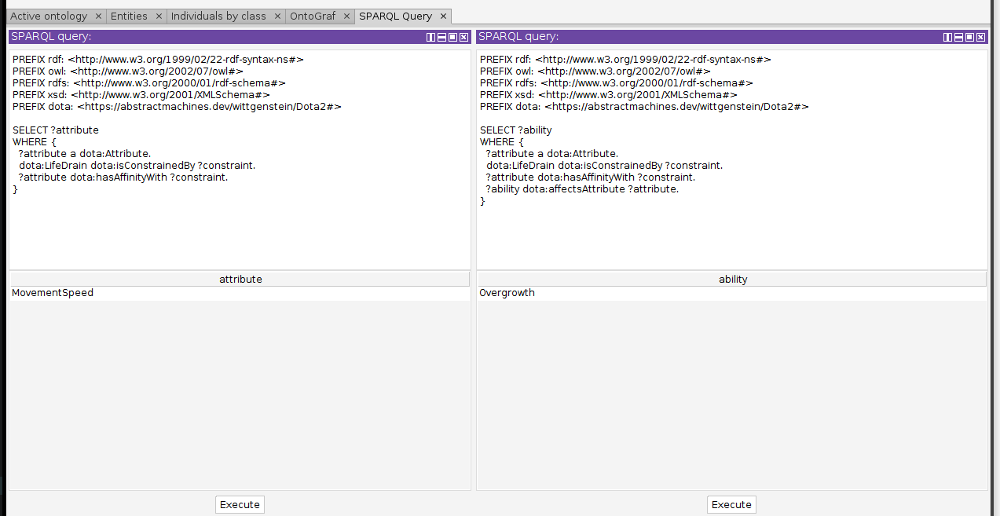
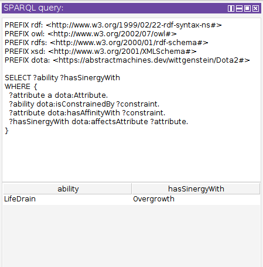
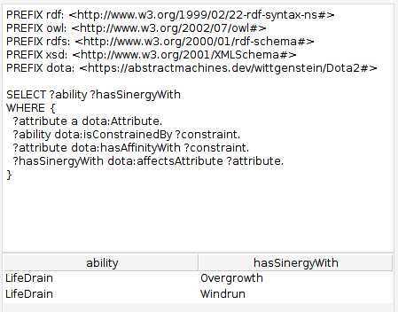

AM008
Building a Dota Ontology (Part 3):
Disclaimer
I am not a professional Dota player, just a fan of the game. The knowledge presented here about it is not official knowledge about the game, and is a mix of my perception of it after ~1200 hours playing it and crowdsourced Dota 2 wiki pages. Take it "as is".
Table of Contents
1. Recap from Part 2
In the last post we introduced the idea of affinity to represent how well 2 abilities synergize based on the impact or effect they have on particular attributes of a Hero.
We know that :movementSpeed, an attribute of hero units, must have affinity
with :linkBreakDistance, an attribute of some abilities. The lower the
movement speed, the better this is for anything that has a link break distance,
because it means that it will give the caster more time to use the ability.
We also explored reifying Affinities in two different ways: as a hierarchy of properties and as a class of individuals.
In today's post we're going to model affinities as a hierarchy of properties and see where this takes us.
2. Affinities as a Hierarchy of Properties
Picture 2 properties, one of a Hero, another of an Ability.
The Hero property, movementSpeed, determines how fast a hero moves. It has
domain Hero and range non-negative integer.
The Ability property, linkBreakDistance, determines how far away two heroes
must be for the ability link to break. It has domain Ability, and range
non-negative integer.
We can establish a hierarchy between these two by establishing a relation
between linkBreakDistance and movementSpeed. This relation will represent
an Affinity.
### https://abstractmachines.dev/wittgenstein/Dota2#linkBreakDistance
:linkBreakDistance rdf:type owl:DatatypeProperty ;
...;
:hasAffinityWith :movementSpeed;
...;
.
Such that when traversing the Ontology we can identify this affinity and reason about it.
Unfortunately, OWL does not support arbitrary relationships between properties.
The only 2 relationships between properties that are allowed are
rdfs:subPropertyOf, to specify that one is a subproperty of another, and
owl:equivalentProperty, to specify that 2 properties are, well, equivalent.
There's also owl:sameAs but it belongs to OWL Full, an undecidable version
of OWL.
The small but crucial difference between owl:sameAs and
owl:equivalentProperty is that you can use one to indicate that both fields
will contain the same values (equivalentProperty), or that both fields are
meant to mean the same thing.
It is easy to imagine 2 boolean flags that can have the same values but are
meant to mean very different things. E.g, shouldRestart and isAlive.
To read more about this check this StackOverflow question and if you're really into this subject, the Object Property Axioms section of the OWL2 Syntax specification should be of interest.
Either way, this means that we can't really establish a hierarchy of properties in a decidable subset of our preferred ontological language. Bummer.
We will next try to reify our attributes as individuals of a class, such as
Attribute, and establishing a relationship between them instead. We've also
made a new ObjectProperty that would link instances of these Attributes
together, called hasAffinityWith.
hasAffinityWith is an symmetric property, to allow going back and forth
that link.
### https://abstractmachines.dev/wittgenstein/Dota2#Attribute
:Attribute rdf:type owl:Class ;
rdfs:subClassOf :DotaThing .
### https://abstractmachines.dev/wittgenstein/Dota2#hasAffinityWith
:hasAffinityWith rdf:type owl:ObjectProperty ;
rdfs:subPropertyOf :DotaObjectProperty ;
rdf:type owl:SymmetricProperty ;
rdfs:domain :Attribute ;
rdfs:range :Attribute .
### https://abstractmachines.dev/wittgenstein/Dota2#MovementSpeed
:MovementSpeed rdf:type owl:NamedIndividual, :Attribute ;
:hasAffinityWith :LinkBreakDistance .
### https://abstractmachines.dev/wittgenstein/Dota2#MovementSpeed
:LinkBreakDistance rdf:type owl:NamedIndividual, :Attribute .
This petite ontology now looks like this:

You can read the Turtle file here: Dota2.ttl at .
Moving on, now that we have established this relationship, lets see if it is useful for finding out what should we look for when pairing up Pugna's LifeDrain with other skills. For this we will reintroduce the Ability class from the last 2 articles, and remodel both Pugna's Life Drain and Treant Protector's Overgrowth.
### https://abstractmachines.dev/wittgenstein/Dota2#Ability
:Ability rdf:type owl:Class ;
rdfs:subClassOf :DotaThing .
### https://abstractmachines.dev/wittgenstein/Dota2#LifeDrain
:LifeDrain rdf:type owl:NamedIndividual, :Ability .
### https://abstractmachines.dev/wittgenstein/Dota2#Overgrowth
:Overgrowth rdf:type owl:NamedIndividual, :Ability .
The next step will be to link these two to the appropriate attributes that characterize them, or that they affect. These ability attributes are intrinsic of the ability caster (such as the effective casting range), of the ability itself (such as the ability duration), or of the target (such as the effective moving speed of the afflicted hero).
For the time being we are only interested in the characteristics of the ability
itself, which we can model with a relation such as isConstrainedBy.
We can say that LifeDrain is constrained by LinkBreakDistance in this way:
### https://abstractmachines.dev/wittgenstein/Dota2#isConstrainedBy
:isConstrainedBy rdf:type owl:ObjectProperty ;
rdfs:subPropertyOf :DotaObjectProperty ;
rdfs:domain :Ability ;
rdfs:range :Attribute .
### https://abstractmachines.dev/wittgenstein/Dota2#LifeDrain
:LifeDrain :isConstrainedBy :LinkBreakDistance .
Note that I haven't redefined LifeDrain, just stated more facts about it.
We should now have enough information to fire up a SPARQL engine and find out what attributes to look for when searching for synergies with LifeDrain.
PREFIX rdf: <http://www.w3.org/1999/02/22-rdf-syntax-ns#>
PREFIX owl: <http://www.w3.org/2002/07/owl#>
PREFIX rdfs: <http://www.w3.org/2000/01/rdf-schema#>
PREFIX xsd: <http://www.w3.org/2001/XMLSchema#>
PREFIX dota: <https://abstractmachines.dev/wittgenstein/Dota2#>
SELECT ?attribute
WHERE {
?attribute a dota:Attribute.
dota:LifeDrain dota:isConstrainedBy ?constraint.
?attribute dota:hasAffinityWith ?constraint.
}
Here we will select everything that is a dota:Attribute and has affinity with
whatever is the ?constraint of dota:LifeDrain.
The result of this query looks is dota:MovementSpeed! Eureka! We managed to
find the relevant attributes that would maximize our ability's efficiency. Or,
as we say in the Dota scene, that would make you broken.
But still, with over 130 heroes, there's over 500 abilities to keep track of and remember. It would certainly be benefitial to be able to query for the abilities that make Life Drain broken.
We can add a new relationship to represent what attributes will be affected by a particular ability like this:
### https://abstractmachines.dev/wittgenstein/Dota2#affectsAttribute
:affectsAttribute rdf:type owl:ObjectProperty ;
rdfs:subPropertyOf :DotaObjectProperty ;
rdfs:domain :Ability ;
rdfs:range :Attribute .
And we can now represent in our ontology the fact that Overgrowth affects the Movement Speed of a hero:
### https://abstractmachines.dev/wittgenstein/Dota2#Overgrowth
:Overgrowth :affectsAttribute :MovementSpeed .
With this in place, we can extend our query to match on all the abilities that affect attributes that have affinity with the attributes LifeDrain is constrained by. Pretty powerful stuff. It looks like this:
PREFIX rdf: <http://www.w3.org/1999/02/22-rdf-syntax-ns#>
PREFIX owl: <http://www.w3.org/2002/07/owl#>
PREFIX rdfs: <http://www.w3.org/2000/01/rdf-schema#>
PREFIX xsd: <http://www.w3.org/2001/XMLSchema#>
PREFIX dota: <https://abstractmachines.dev/wittgenstein/Dota2#>
SELECT ?ability
WHERE {
?attribute a dota:Attribute.
dota:LifeDrain dota:isConstrainedBy ?constraint.
?attribute dota:hasAffinityWith ?constraint.
?ability dota:affectsAttribute ?attribute.
}
And the result is indeed Overgrowth!

A more general query to find all the ability-pairs at once would look like this:
PREFIX rdf: <http://www.w3.org/1999/02/22-rdf-syntax-ns#>
PREFIX owl: <http://www.w3.org/2002/07/owl#>
PREFIX rdfs: <http://www.w3.org/2000/01/rdf-schema#>
PREFIX xsd: <http://www.w3.org/2001/XMLSchema#>
PREFIX dota: <https://abstractmachines.dev/wittgenstein/Dota2#>
SELECT ?ability ?hasSinergyWith
WHERE {
?attribute a dota:Attribute.
?ability dota:isConstrainedBy ?constraint.
?attribute dota:hasAffinityWith ?constraint.
?hasSinergyWith dota:affectsAttribute ?attribute.
}
Note how we just replace the specific name by a variable one and we can get all the matches this is true for. The results:

This ontology above is already proving itself useful, allowing us to represent many spells and find relations between them. Unfortunately it lacks the knowledge to disambiguate between a spell that reduces an attribute, and one that increases it.
So if we model Windranger's Windrun, it will show up as spell that goes well with Pugna's Life Drain, because Windrun affects the MovementSpeed of Windranger.
The detail that cannot yet be captured is that it increases the MovementSpeed by 60%. This is very bad for Pugna's Life Drain because the Windranger will be able to reach the LinkBreakDistance much faster than without this spell.
### https://abstractmachines.dev/wittgenstein/Dota2#Windrun
:Windrun rdf:type owl:NamedIndividual, :Ability ;
:affectsAttribute :MovementSpeed .
After adding it with the snippet above, we can run the query and see the results:

We could model the affinity using a series of relations
(hasPositiveAffinityWith, affectsAttributePositively, and their
*Negatively* counterparts), but we could also lift an Affinity to an instance
that can hold more properties.
On the next part we'll model the affinity in more detail, starting with the
Affinity class, and we'll see where this takes us.
References
- Dota 2 Gamepedia [wiki]
- Dota 2 Ontology [github]
- OWL [overview]
- Turtle [spec]